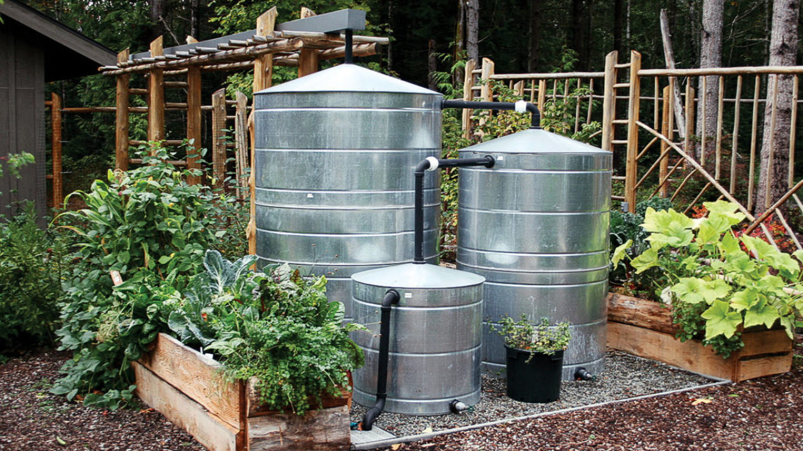
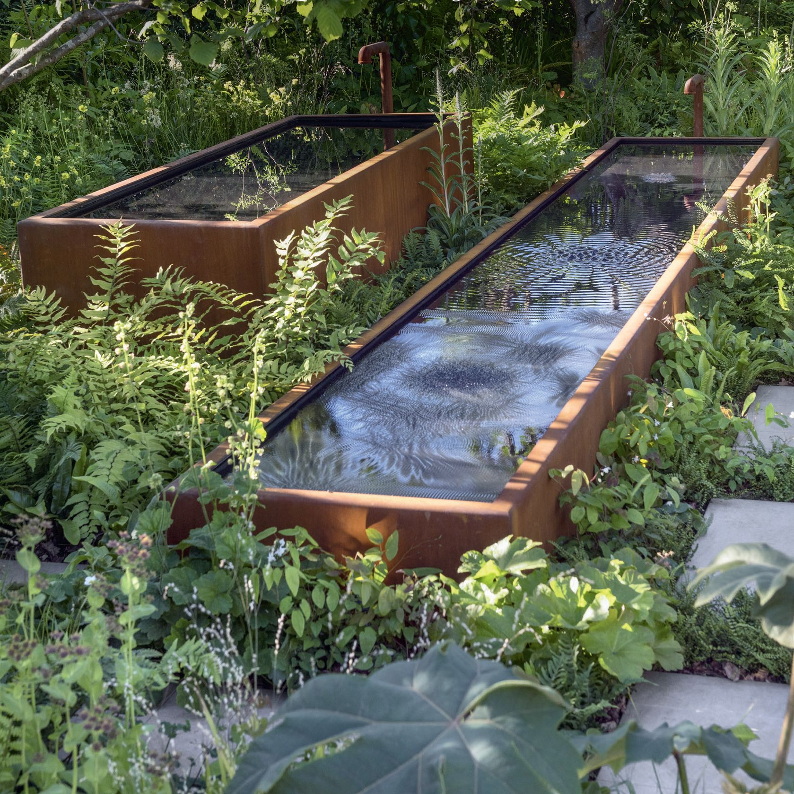

<!DOCTYPE html>
<html lang="nl"></html>
    <head>
        <meta charset="utf-8">
        <meta http-equiv="X-UA-Compatible" content="IE=edge">
        <title>B-rain</title>
        <meta name="description" content="">
        <meta name="viewport" content="width=device-width, initial-scale=1">
        <link rel="stylesheet" href="styles.css">
        <link href="https://fonts.googleapis.com/css2?family=Lato:ital,wght@0,300;0,400;0,700;1,300;1,400;1,700&display=swap" rel="stylesheet">
    </head>


<body>
    <header class="header">
      <a href="https://www.spatwater.nl/" class="logo">
        
      </a>
      <input class="menu-btn" type="checkbox" id="menu-btn" />
      <label class="menu-icon" for="menu-btn"><span class="navicon"></span></label>
      <ul class="menu">
        <li><a href="#Home">Our Work</a></li>
        <li><a href="#About Us">About</a></li>
        <li><a href="#Info">Careers</a></li>
        <li><a href="#Contact">Contact</a></li>
      </ul>
    </header>
<br>
<br>
<br>
<br>
<br>

<main>
  <div class="hero">
    <h1>b-Rain</h1>
    <p>Klimaatadaptief met regen.</p>
    <!-- <button>Learn More</button> -->
  </div>

  <article class="awesome-article">
    <div class="image-container">
      <div class="image-wrapper">
        
      </div>
      <div class="image-wrapper">
        
      </div>
    </div>
  
    <div class="content"> /* content verwisselen met introductie */
      <h2 class="h2-subtitle">Introductie</h2>
      <p>Klimaatverandering zorgt voor meer droogte en wateroverlast door intense buien 

        Ons riool kan al dat water bij een bui vaak niet aan, en zorgt voor wateroverlast en vervuild rioolwater in ons toch al kwetsbare oppervlaktewater 
        
        Het is tijd om massaal ons regenwater vast te houden en her te gebruiken. 
        
        Nederland heeft ongeveer 15 miljoen regenpijpen.  
        
        Als je een (kleine) regenton installeert van 100 liter, en je leegt een volle ton tien keer in een jaar in je tuin of op je bedrijventerrein... 
        
        Dan ontlasten we ons riool met 1.5 miljard liter water per jaar 
        
        Maar hoe zorg je ervoor dat dit gebeurt zonder dat je zelf elke keer de kraan van je regenwateropslag open hoeft te zetten? 
        
        Het is tijd om slim met ons water om te gaan: be b-RAIN! 
        
         </p>
      <!-- <button class="explore-btn">Explore More</button> -->
    </div>
  </article>

<br>
<br>
<br>
<br>

  <article class="info">
    <h2 class="sub1">Wat is b-RAIN?</h2>
      <p>
        b-RAIN is de manier om zo optimaal mogelijk om te gaan met de neerslag rondom je huis. Met slimme technologie, gebaseerd op weersvoorspellingen, regelt ons product automatisch de hoeveelheid water in de regenton, zodat je altijd het meeste uit je waterreservoir haalt zonder er tijd aan kwijt te zijn. 
        Als de regenton vol zit en er is een hevige bui voorspeld, dan leegt de ton zich automatisch om de piekbui op te vangen. 
        Als er droogte voorspeld is, houdt de regenton zoveel mogelijk water vast. Dit water kan je op een ioptimaal moment inzetten, zoals het beregenen van groen of het wassen van je auto.  
        De b-RAIN app communiceert met onze slimme kraan en geeft je inzicht in hoeveel water er al bespaard is, wat de neerslagverwachting is en wanneer je je tuin het beste water kan geven.
      </p>
  </article>
  
</main>

<footer>
  <p>&copy; 2023 INEZleft</p>
</footer>
</body>
</html>


